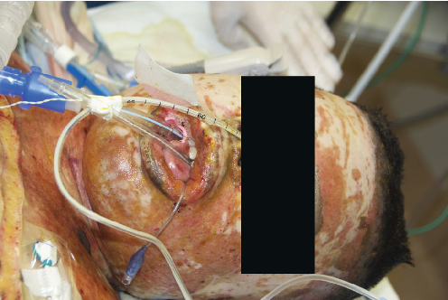
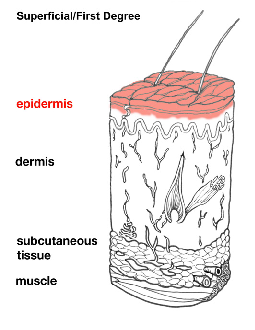
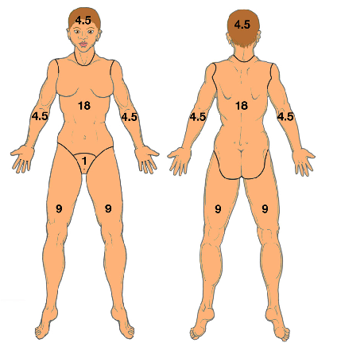

ประเมินสัญญาณเตือนทางเดินหายใจอุดกั้นและพิษจากควันไฟตามแนวทาง ATLS 11th Edition:
ข้อแนะนำทางคลินิก:
เฝ้าระวังอาการทางเดินหายใจอย่างใกล้ชิด

ATLS 11th Fig 9-1: ภาวะบวมและอุดกั้นของทางเดินหายใจจากแผลไหม้บริเวณใบหน้าและรอบปาก

ATLS 11th Fig 9-3: การจำแนกระดับความลึกของแผลไหม้ (1st, 2nd, 3rd Degree)

ATLS Fig 9-2 (Reference Only): กฎ Rule of Nines สำหรับประเมินเร็วเบื้องต้น (เครื่องมือนี้ใช้ Lund-Browder 6 Columns เพื่อความแม่นยำสูงสุด)